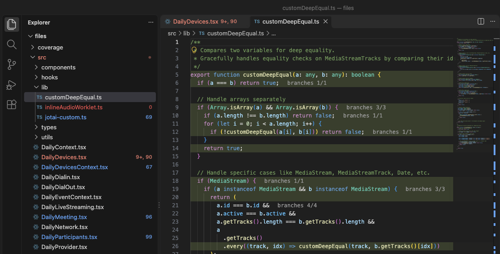

Open files in VS Code and Cursor / Code and APIs
Show code coverage on your source lines in VS Code
Code Coverage & LCOV Viewer reads the coverage report your test runner already writes (lcov.info, Cobertura XML, JaCoCo XML or Clover XML) and marks covered and missed lines in the editor, with file totals and the least-covered files in the Explorer. It works locally, with no sign-in and no network calls. All of that is free. Zovo Pro (USD 19 once) adds diff coverage for lines changed against main, an HTML or Markdown export, and coverage history with a CI threshold, with 3 free tries each.
Free, MIT license. Extension ID zovo.zovo-code-coverage, version 0.1.1. Needs VS Code 1.90.0 or newer.

Steps in VS Code
- Install Code Coverage & LCOV Viewer from the Marketplace, or press Ctrl+P (Cmd+P on macOS) and run
ext install zovo.zovo-code-coverage. - Run your tests with coverage so they write a report, for example
coverage/lcov.info,coverage.xml,jacoco.xmlorclover.xml. - Open the project in VS Code. Code Coverage finds those files anywhere in the workspace.
- Open a source file. Covered lines and missed lines are marked in the editor.
- After a new test run, run "Code Coverage: Refresh Reports" to reload the reports. "Code Coverage: Show Summary" opens a summary page with the file totals and the least-covered files.
- If your reports are somewhere else, change the report paths in Settings.
Where Zovo Pro saves time
Reading LCOV, Cobertura, JaCoCo and Clover reports, marking covered and missed lines, file totals and the least-covered files are free, locally, with no sign-in and no network calls. There is no trial timer and no license banner.
In a pull request, the question is whether the lines you changed are tested. Check Diff Coverage looks only at the lines changed between main and HEAD and reports their coverage. It needs Git and a local main branch. The other two Pro tools are Export Report, which writes line and branch results as HTML or Markdown, and coverage history with Set CI Threshold, which saves your runs and checks a threshold with JSON output for CI.
With Check Diff Coverage (Zovo Pro)
- Commit your changes on your branch, and make sure a local
mainbranch exists. - Run "Code Coverage: Check Diff Coverage" from the Command Palette, use its link in the summary page, or right-click a report or a covered file in the Explorer and pick "Zovo Pro: Diff coverage against main".
- Read the coverage of the changed lines. Pro tools run only when you use their commands, and the files stay on your computer.
Check Diff Coverage works 3 times on your computer before it asks for a license, and a try counts only when you get a result. Opening a file shows no popup and no countdown.
Zovo Pro costs USD 19 once. It is not a subscription, and it turns on the Pro tools in every Zovo extension, not only Code Coverage & LCOV Viewer. After a card payment (Stripe) your license key shows on the next page. In VS Code, run "Zovo Pro: Enter Zovo Pro license key" from the Command Palette and paste it. The key is checked on your computer, with no network call. With GitHub Sponsors, pick the "$19 one time" tier, then run "Zovo Pro: I already paid: unlock with GitHub Sponsors" and sign in with the same GitHub account. With PayPal, send USD 19 with "Zovo Pro" in the note and the key comes by email within a day.
A team of 5: USD 59 once, by card or by PayPal. Every rule and every Pro tool is on the Zovo Pro page.
Steps in Cursor, Windsurf or VSCodium
- Open the Extensions view with Ctrl+Shift+X (Cmd+Shift+X on macOS).
- Search for
zovo.zovo-code-coverageand click Install. Cursor, Windsurf and VSCodium install from Open VSX, where it is published aszovo/zovo-code-coverage. - If your editor has no gallery, download the .vsix from the Open VSX page and run "Extensions: Install from VSIX...".
- Then use it the same way as in VS Code.
What Code Coverage & LCOV Viewer handles
lcov.info(LCOV), Cobertura XML, JaCoCo XML and Clover XML.- Several reports at once: when reports share a source line, the highest hit count is used. A folder with several formats of the same run (for example
lcov.infoandclover.xml) is counted once. - Source paths resolved from the workspace root.
What it does not do
- It reads report files and does not launch a test runner.
- Clover branch counts are not available.
- The report search is capped at 100 matches per pattern.
- Diff coverage checks committed changes between
mainandHEAD.
Other options
- Coverage Gutters (
ryanluker.vscode-coverage-gutters, 955,296 installs, on Open VSX). Its own description: "Display test coverage generated by lcov or xml - works with many languages". - Code Coverage (
markis.code-coverage, 436,007 installs, not on Open VSX). Its own description: "Boost test coverage and reliability with this easy-to-use code coverage analysis tool". - The HTML report of your test runner. Most coverage tools (nyc, coverage.py, JaCoCo) can also write an HTML report to open in a browser, outside the editor.
Install counts and Open VSX status were checked on 12 November 2026. Descriptions in quotes are the extensions' own.
Questions
Can VS Code show code coverage without an extension?
VS Code shows coverage only for test runners that report it through the built-in Testing view. To read an lcov.info or XML report from any tool, you need an extension.
Which test runners work?
Any runner that writes LCOV, Cobertura, JaCoCo or Clover, such as Jest, Vitest, nyc, pytest-cov, JaCoCo for Java and many others.
Does it run my tests?
No. It reads the report files your test run already wrote. Run Code Coverage: Refresh Reports after a new run.
Does it work in Cursor or Windsurf?
Yes. Cursor, Windsurf and VSCodium install extensions from Open VSX. Search for the extension in their Extensions view and install it there.
More about Code Coverage & LCOV Viewer
Read the Code Coverage & LCOV Viewer page for every feature and setting, or the source code on GitHub.
Related guides
- Open a SARIF file in VS Code
- Preview a Swagger or OpenAPI file in VS Code
- Preview an HTML file with its CSS and images in VS Code
- Test a regex in VS Code
Zovo Pro and support
Zovo Pro: USD 19 once, every Zovo viewer. It turns on the Pro tools in this extension and in the other Zovo extensions you use. The free features stay free.
After a card payment your license key shows on the next page. Paste it with the command "Zovo Pro: Enter a key".
You can also support the work with no Pro:
Need your format supported?
Open a format request with a sample file, and I reply there whether it can be done. For USD 299 once, through this GitHub Sponsors tier, I add your file format or a missing feature to this extension, with tests, within 7 days.